|
Roda JC - FC Zwolle (1-1) 6 maart 2004 |
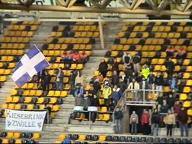
De 50 meegereisde Zwolle-supporters.
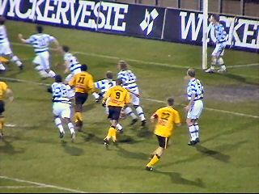
Zoals verwacht een zwaar verdedigend FC Zwolle.
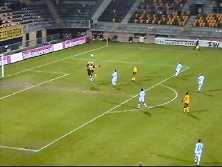
Invaller Redan komt in aanraking met doelman
Van der Werff.
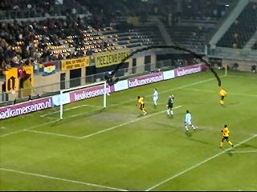
De bal komt bij Cristiano die op de paal schiet.
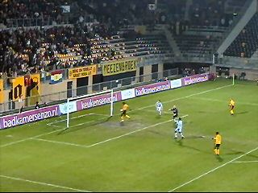
Redan loopt de teruggesprongen bal binnen. Ook
bij Roda bewijst deze jongeling zijn waarde als
super-sub: 1-0 (51').
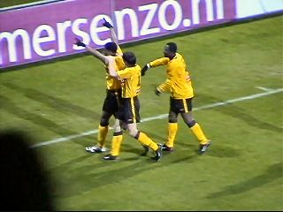
Een droomdebuut voor Iwan Redan!
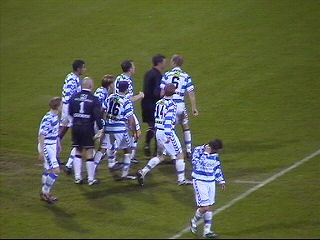
De Zwollenaren protesteren hevig bij arbiter
Oskam vanwege de overtreding (?) van Redan
op Van der Werff.
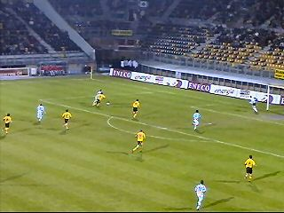
Sonkaya let even niet op zijn mannetje....
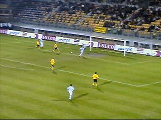
die Van Dinteren bedient welke de pass perfect
afrondt: 1-1 (63').
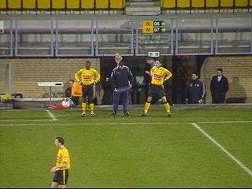
Sonko en Vicelich worden gebracht voor Sergio
en Cristiano.
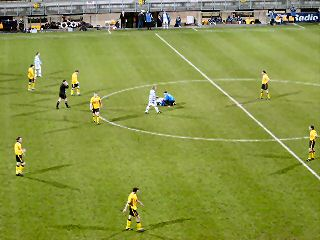
Zwolle gaat opzichtig tijd rekken.
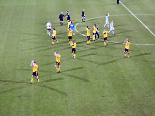
Het blijft 1-1 en dus laat Roda heel dure punten
liggen in de race voor een uefa-ticket.
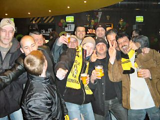
Ondanks deze domper was het toch nog redelijk
gezellig in de Kick-Off.
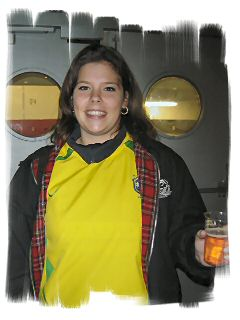
Dit wordt het nieuwe Roda-meëdsje.
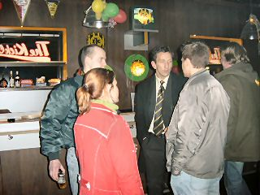
Van de spelers kwam alleen Van Hoogdalem
opdagen. Hier in gesprek met de RFH.
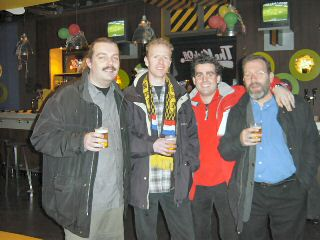
Nog meer vrolijke gezichten.
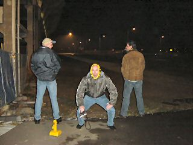
De letste koempels maachen werrum de lamp oes
en zaegene de Roda-ringk....